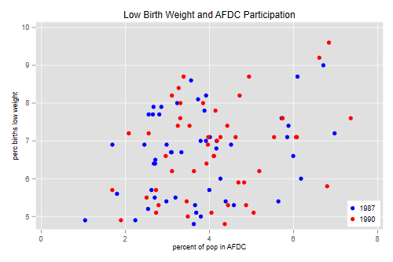
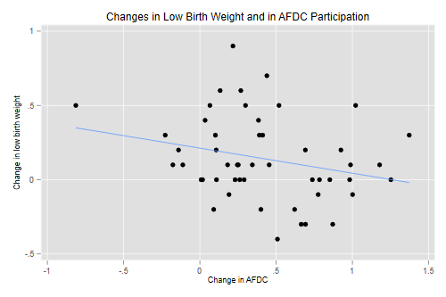

Here’s an interesting example where fixed-effects gives a very different answer from OLS and random-effects models. The data come from Wooldridge’s text and concern state-level data on the percentage of births classified as low birth weight and the percentage of the population in the AFDC welfare program in 1987 and 1990. The data are available from the Stata website.
. use https://www.stata.com/data/jwooldridge/eacsap/lowbirth, clear
Here’s a regression of low birth weight on AFDC with a dummy for 1990 (time trends) and controls for log physicians per capita, log beds per capita, log per capita income, and log population.
. reg lowbrth d90 afdcprc lphypc lbedspc lpcinc lpopul
Source │ SS df MS Number of obs = 100
─────────────┼────────────────────────────────── F(6, 93) = 5.19
Model │ 33.7710894 6 5.6285149 Prob > F = 0.0001
Residual │ 100.834005 93 1.08423661 R-squared = 0.2509
─────────────┼────────────────────────────────── Adj R-squared = 0.2026
Total │ 134.605095 99 1.35964742 Root MSE = 1.0413
─────────────┬────────────────────────────────────────────────────────────────
lowbrth │ Coefficient Std. err. t P>|t| [95% conf. interval]
─────────────┼────────────────────────────────────────────────────────────────
d90 │ .5797136 .2761244 2.10 0.038 .0313853 1.128042
afdcprc │ .0955932 .0921802 1.04 0.302 -.0874584 .2786448
lphypc │ .3080648 .71546 0.43 0.668 -1.112697 1.728827
lbedspc │ .2790041 .5130275 0.54 0.588 -.7397668 1.297775
lpcinc │ -2.494685 .9783021 -2.55 0.012 -4.4374 -.5519711
lpopul │ .739284 .7023191 1.05 0.295 -.6553826 2.133951
_cons │ 26.57786 7.158022 3.71 0.000 12.36344 40.79227
─────────────┴────────────────────────────────────────────────────────────────
It seems as if AFDC has a pernicious effect on low birth weight: each percent in AFDC is associated with an extra 1/10-th of one percent with low birth weight. A scatterplot shows a positive correlation:
. twoway (scatter lowbrth afdcprc if year==1987, mcolor(blue) ) /// > (scatter lowbrth afdcprc if year==1990, mcolor(red) ) , /// > legend( lab(1 "1987") lab(2 "1990") ring(0) pos(5) ) . graph export afdc1.png, width(500) replace file afdc1.png saved as PNG format

Fitting a random-effects model improves things a bit. I first
encode the state abbreviation to have a numeric id
variable. For this dataset the results with xtreg and
mixed are a bit different. I report the results for
mixed, which agrees with R.
. encode stateabb, gen(stateid)
. mixed lowbrth d90 afdcprc lphypc lbedspc lpcinc lpopul || stateid:
Performing EM optimization ...
Performing gradient-based optimization:
Iteration 0: log likelihood = -79.732599
Iteration 1: log likelihood = -79.732599
Computing standard errors ...
Mixed-effects ML regression Number of obs = 100
Group variable: stateid Number of groups = 50
Obs per group:
min = 2
avg = 2.0
max = 2
Wald chi2(6) = 24.39
Log likelihood = -79.732599 Prob > chi2 = 0.0004
─────────────┬────────────────────────────────────────────────────────────────
lowbrth │ Coefficient Std. err. z P>|z| [95% conf. interval]
─────────────┼────────────────────────────────────────────────────────────────
d90 │ .506784 .1837357 2.76 0.006 .1466687 .8668994
afdcprc │ -.0823577 .0778829 -1.06 0.290 -.2350054 .07029
lphypc │ .2926323 .8293795 0.35 0.724 -1.332922 1.918186
lbedspc │ .4291244 .5088063 0.84 0.399 -.5681176 1.426366
lpcinc │ -1.681796 .9542535 -1.76 0.078 -3.552099 .1885062
lpopul │ .7490035 .8004223 0.94 0.349 -.8197953 2.317802
_cons │ 20.12827 7.763454 2.59 0.010 4.912177 35.34436
─────────────┴────────────────────────────────────────────────────────────────
─────────────────────────────┬────────────────────────────────────────────────
Random-effects parameters │ Estimate Std. err. [95% conf. interval]
─────────────────────────────┼────────────────────────────────────────────────
stateid: Identity │
var(_cons) │ 1.035848 .2183906 .6852274 1.565875
─────────────────────────────┼────────────────────────────────────────────────
var(Residual) │ .0394129 .0081434 .0262884 .0590896
─────────────────────────────┴────────────────────────────────────────────────
LR test vs. linear model: chibar2(01) = 125.15 Prob >= chibar2 = 0.0000
. estat icc
Residual intraclass correlation
─────────────────────────────┬────────────────────────────────────────────────
Level │ ICC Std. err. [95% conf. interval]
─────────────────────────────┼────────────────────────────────────────────────
stateid │ .9633458 .0108404 .9350615 .9795797
─────────────────────────────┴────────────────────────────────────────────────
The effect of AFDC is now negative, as we would expect, but not significant. The intra-state correlation over the two years is a remarkable 0.96; persistent state characteristics account for most of the variation in the percent with low birth weight after controlling for AFDC participation and all other variables.
Fitting a fixed-effects model gives much more reasonable results:
. xtreg lowbrth d90 afdcprc lphypc lbedspc lpcinc lpopul, i(stateid) fe
Fixed-effects (within) regression Number of obs = 100
Group variable: stateid Number of groups = 50
R-squared: Obs per group:
Within = 0.3839 min = 2
Between = 0.1741 avg = 2.0
Overall = 0.1679 max = 2
F(6,44) = 4.57
corr(u_i, Xb) = -0.9394 Prob > F = 0.0011
─────────────┬────────────────────────────────────────────────────────────────
lowbrth │ Coefficient Std. err. t P>|t| [95% conf. interval]
─────────────┼────────────────────────────────────────────────────────────────
d90 │ .1060158 .3090664 0.34 0.733 -.5168667 .7288983
afdcprc │ -.1760763 .0903733 -1.95 0.058 -.3582116 .006059
lphypc │ 5.894509 2.816689 2.09 0.042 .2178452 11.57117
lbedspc │ -1.576195 .8852111 -1.78 0.082 -3.360221 .2078308
lpcinc │ -.8455268 1.356773 -0.62 0.536 -3.579924 1.88887
lpopul │ 3.441116 2.872175 1.20 0.237 -2.347372 9.229604
_cons │ -4.0138 22.97888 -0.17 0.862 -50.32468 42.29708
─────────────┼────────────────────────────────────────────────────────────────
sigma_u │ 3.0975315
sigma_e │ .18464547
rho │ .99645917 (fraction of variance due to u_i)
─────────────┴────────────────────────────────────────────────────────────────
F test that all u_i=0: F(49, 44) = 59.46 Prob > F = 0.0000
Now every percent increase in AFDC is associated with a decline of almost 2/10-th of a percentage point in low birth weight. The coefficient of log physicians per capita is highly suspect; this is due to high correlation with the other predictors, most notably the log of population. In fact once we have state fixed effects we don’t really need the other controls:
. xtreg lowbrth d90 afdcprc, i(stateid) fe
Fixed-effects (within) regression Number of obs = 100
Group variable: stateid Number of groups = 50
R-squared: Obs per group:
Within = 0.2602 min = 2
Between = 0.0948 avg = 2.0
Overall = 0.0694 max = 2
F(2,48) = 8.44
corr(u_i, Xb) = -0.4366 Prob > F = 0.0007
─────────────┬────────────────────────────────────────────────────────────────
lowbrth │ Coefficient Std. err. t P>|t| [95% conf. interval]
─────────────┼────────────────────────────────────────────────────────────────
d90 │ .2124736 .0542377 3.92 0.000 .1034214 .3215259
afdcprc │ -.168598 .0907986 -1.86 0.069 -.3511609 .0139649
_cons │ 7.267396 .3411409 21.30 0.000 6.581486 7.953306
─────────────┼────────────────────────────────────────────────────────────────
sigma_u │ 1.2476272
sigma_e │ .19372976
rho │ .97645624 (fraction of variance due to u_i)
─────────────┴────────────────────────────────────────────────────────────────
F test that all u_i=0: F(49, 48) = 65.53 Prob > F = 0.0000
One way to see what’s going on is to compute and plot differences in the percent with low birth weight and the percent with AFDC. We could reshape to wide, but I will keep the data in long format:
. sort stateid year . by stateid (year): gen dlowbrth = lowbrth[2]-lowbrth[1] . by stateid (year): gen dafdcprc = afdcprc[2]-afdcprc[1] . replace dlowbrth = . if year==1987 (50 real changes made, 50 to missing) . replace dafdcprc = . if year==1987 (50 real changes made, 50 to missing) . twoway (scatter dlowbrth dafdcprc) (lfit dlowbrth dafdcprc), /// > legend(off) xtitle(Change in AFDC) ytitle (Change in low birth weight) . graph export afdc2.png, width(500) replace file afdc2.png saved as PNG format

Let us verify that we get the same results using regression on the
differences. The constant is the coefficient of d90 and the
slope is the coefficient of afdcprc:
. reg dlowb dafdc
Source │ SS df MS Number of obs = 50
─────────────┼────────────────────────────────── F(1, 48) = 3.45
Model │ .258802651 1 .258802651 Prob > F = 0.0695
Residual │ 3.60299693 48 .075062436 R-squared = 0.0670
─────────────┼────────────────────────────────── Adj R-squared = 0.0476
Total │ 3.86179958 49 .078812236 Root MSE = .27398
─────────────┬────────────────────────────────────────────────────────────────
dlowbrth │ Coefficient Std. err. t P>|t| [95% conf. interval]
─────────────┼────────────────────────────────────────────────────────────────
dafdcprc │ -.168598 .0907986 -1.86 0.069 -.3511609 .0139649
_cons │ .2124736 .0542377 3.92 0.000 .1034214 .3215259
─────────────┴────────────────────────────────────────────────────────────────
Finally we verify that we get the same results using state dummies.
. quietly reg lowbrth afdcprc d90 i.stateid
. estimates table, keep(afdcprc d90) se
─────────────┬─────────────
Variable │ Active
─────────────┼─────────────
afdcprc │ -.16859799
│ .09079865
d90 │ .21247362
│ .05423772
─────────────┴─────────────
Legend: b/se
I just omitted from the listing the state dummies